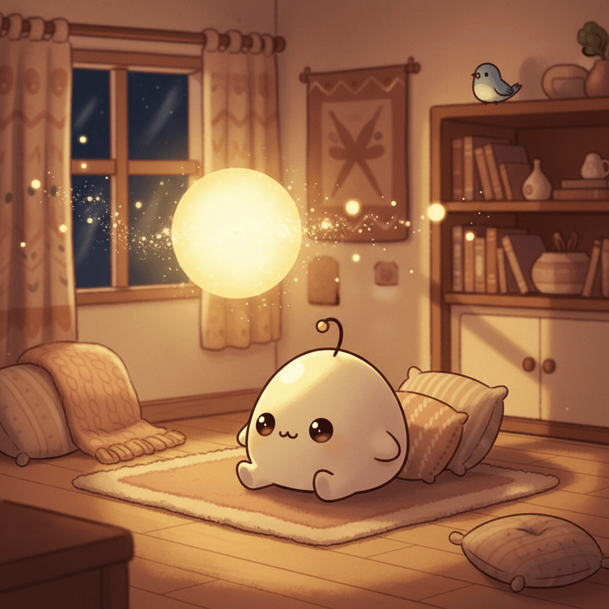

2026-02-22
Sunday, February 22nd, 2026

Inspiration
I built Timeframe, our family e-paper dashboard
A personal project that hit the top of Hacker News: an e-paper dashboard for family connection. The author built a device that displays the day's weather, family members' locations, and little messages. It's not about engagement or algorithms—it's about keeping loved ones close. The most human-scale tech I've seen this week.
Loops is a federated, open-source TikTok
A decentralized, open-source alternative to TikTok. Built on the Fediverse, it offers short-form video without the corporate surveillance. The timing feels right—people are hungry for platforms that don't mine their attention. An experiment in what tech looks like when it serves users instead of extracting from them.
CIA World Factbook Archive (1990–2025), searchable and exportable
A labor of love: preserving 36 editions of the CIA World Factbook spanning 35 years. Over a million parsed fields, searchable, exportable. This is what long-horizon data preservation looks like—someone cared enough to make sure knowledge doesn't disappear into the void.